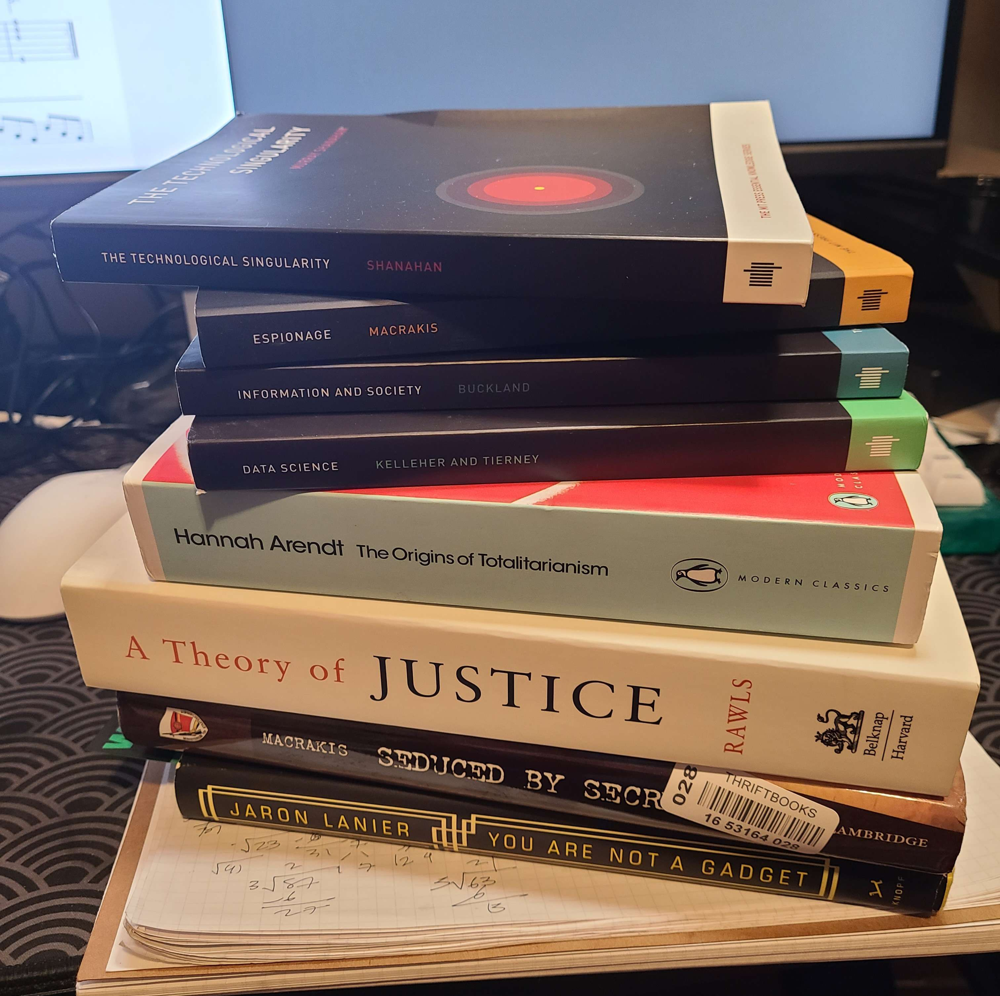

March Book Haul
2024-03-03
Finally - an update. I've survived midterms.
Not pictured above are two books I'm currently reading (and I'm just too lazy to shuffle over to my bedroom and grab them to place on top of the pile for the added aesthetic value). I think I'm dividing my attention between two books, in the same way I divide my attention between my interests. Do you notice the differences between the titles in that pile?
...Anyways. I'm currently reading MOOCs, by Jonathan Haber and On Violence, by Hannah Arendt. The latter is a lot more dense, while the former is a casual, but still very informative and well-articulated, overview of an interesting topic.
I'm not going to spoil the organizational structure I have in mind for my blog, so I'll just talk about what I look forward to from these books.
- First off: yes, half of my haul consists of these small books published for The MIT Press Essential Knowledge Series. I encountered the Data Science book in the library and was very much drawn to the aforementioned casual-but-well-articulated approach the writers have on these very complex topics. They seem perfect for me - someone who has a passing curiosity across many domains, but not a strong foundation in all of them.
- I must admit, I'm really intrgued about The Technological Singularity. What is often referred to as "the singularity" seems to be getting closer and closer to our current lived experiences, while previously it was mostly isolated to some philosophically charged concepts in science fiction. And I'm not actually big on science fiction at all, so maybe this topic will kick-start a quest of discovery in that genre...
- Ultimately, I ended up putting Information and Society into my shopping cart rather than Metadata, even though I find both of those topics necessary to understanding the impact that digitally shared information has on... well, everything in our modern world. It's the whole "I don't have the foundations for this" feeling which kept me from grabbing the book on metadata.
- Data Science is self exaplanatory. It's a relatively younger field that mostly overlaps with Computer Science, and I would love to get some beginning concepts about it down before taking my first Data Science class next semester.
- Espionage is going to be a fun one. Also, I'm thinking about reading it prior to Seduced by Secrets, which goes over the "Spy-Tech" of the East German security service. Very excited about both of these topics.
- The text of A Theory of Justice was introduced to me a couple of years ago in an Intro to Ethics class. I remember my classmates really struggling with reading assigned passages in this book, and although I didn't fare much better, I also remember how self-contained many of the ideas were. And of course, many of these ideas - and the book itself - often shows up in the social science domain. It just seems "right" that I read this in earnest.
- Hanna Arendt - don't even know where to start with her. I think I need to finish On Violence first and then cover all the stuff I really want to say later. Not now. The Origins of Totalitarianism is probably her most well-known work, and I just don't feel "worthy" of it at the moment.
- You Are Not a Gadget was an impulse purchase. I'm not implying that I regret buying it (because I haven't even a single page) - but I immediately looked up Lanier after listening to his lecture on data dignity and felt compelled to learn more about his ideas.
Next post will probably be about MOOCs or some other random thing that comes up in my mind. Until then.